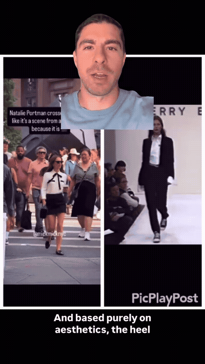
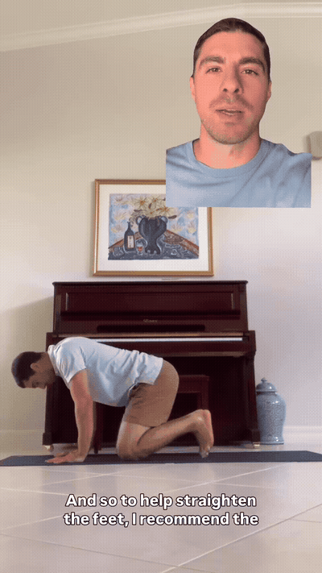
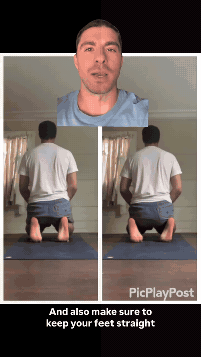

Diagnostic: when the foot leaves the ground, a heel that turns IN toward the body signals compression through the hip, foot and ankle. A heel that turns AWAY (straight feet, narrow stance) is the correct way for the body to release pressure — and looks more fluid.

The fix: tuck the toes under to straighten the feet, restore toe mobility and open the ankle. Keep the feet straight — do not let the heels fall out to the side or you lose the big-toe-pad connection.

If the toe-tuck stretch is too much pressure at the foot/ankle, or you cannot get into it, prop the knees up with a towel or yoga blocks to take pressure off — and keep the feet straight.

The final cue: keep the feet straight and the big-toe pad down. If the heels fall off to the side you have lost the connection needed for a good stretch — reset and re-tuck.